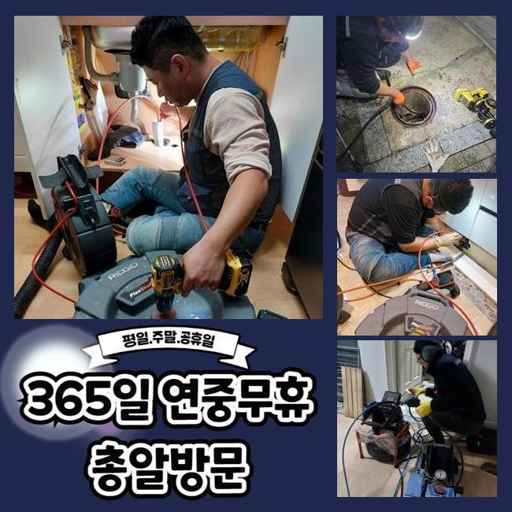
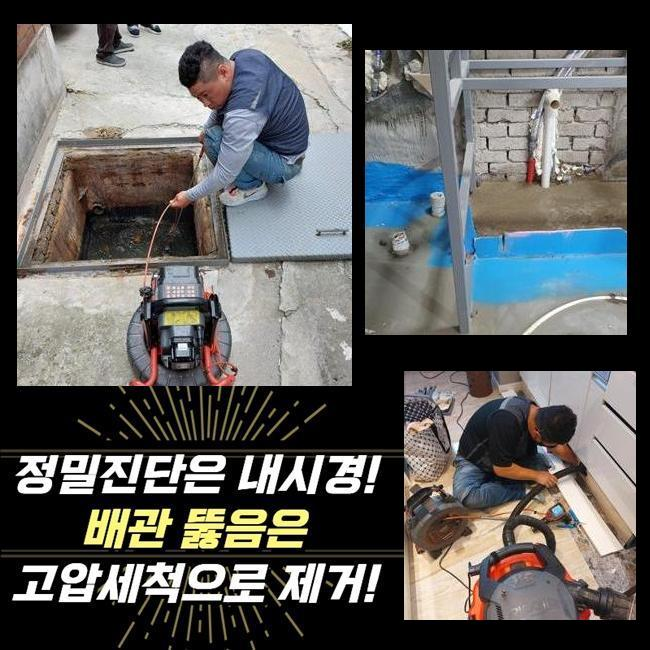
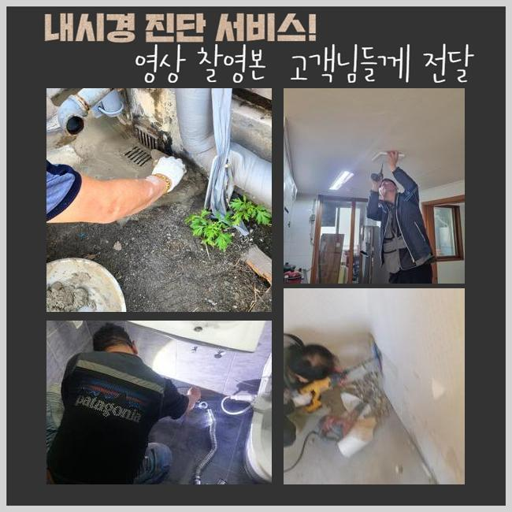
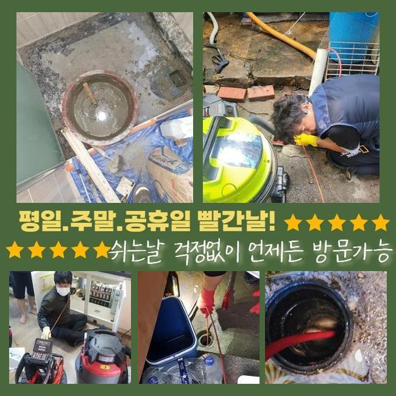
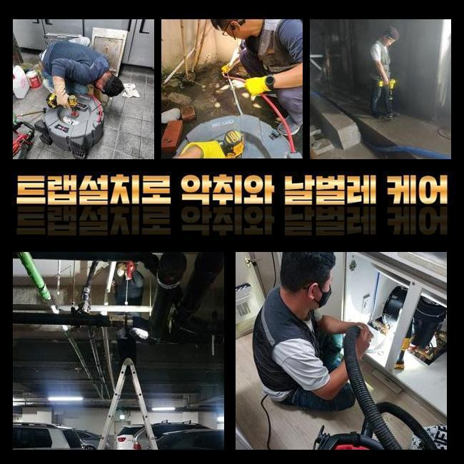
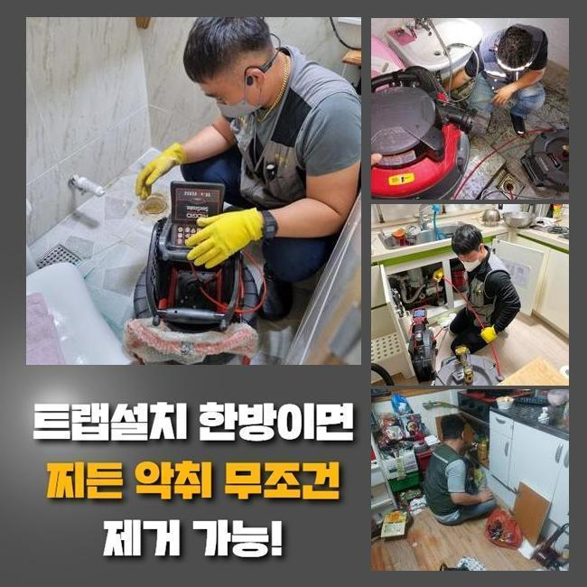

🏠 거모동씽크대역류 도창동 하수구청소장비 수리업체
용인 싱크대막힘 전문 시공 후기

📋 작업 개요
- 위치: 용인
- 서비스 유형: 싱크대막힘, 하수구막힘, 배관막힘, 누수수리, 역류해결, 뚫는업체, 배관청소, 고압세척, 설비공사, 악취차단
- 작업 일시: 2025. 4. 10. 21:57
- 업체명: 하수구수사대 (010-5615-2118)
🔍 문제 상황
거모동씽크대역류 도창동 하수구청소장비 수리업체
욕실공간이나 싱크대는 일상에서 필수적인 장소인데요
그러므로 일상중에 갑작스럽게 배수기능에 문제가 생기면 불편은 말로다 형언하기 어려울겁니다
하지만 물이 천천히 빠지는 상황을 방치하고 무시하는 고객분들이 많죠
얼마 뒤에 증세가 사라지거나 최소한 악화되지는 않겠다고 여기는 경우죠
반면 실상은 그런식으로 흘러가지 않아요
이를 초창기에 적합하게 소제한다면 심각한 상황에 놓이지 않을 수 있답니다
물빠짐이 느리게 된다는건 관로의 어딘가에 유동성을 저해하는 슬러지가 상존한다는 이야기에요
이물질들이 추가로 누증돼 더더욱 곤란한 사태로 치닫기 전 전문업체에 의뢰하여 적합하게 검정을 실시하고 세척해나가야 하죠
그저께 해결한 장소를 세밀하게 말씀해드리도록 하겠습니다
유사한 증세로 기술자를 찾고계시는 이웃분들에게 조금이나마 도움됐으면 하네요
저희측이 방문한 장소는 꼬마빌딩에 소재한 식당입니다
일주일전 쯤부터 화장실과 주방시설에 이르기까지 점차적으로 물이 안내려간다고 말씀하셨죠

🔎 원인 분석
💡 전문가 진단: 정밀 진단 장비를 사용하여 슬러지의 고착 여부를 판명하고 타격/세척 작업을 실시했습니다.
전적으로 고장나버린건 아니라 몇시간 지나고나서는 소멸되어서 다음에 고치자는 생각을 갖고 지속해서 쓰셨다고 합니다
이러한 결과물로 사태가 악화되어서 배수가 멈추었고 고약한 냄새가 올라오는 상황까지 발현된 것이죠
배수관의 구조는 난삽하고 비좁은 길목으로 만들어져 있답니다
따라서 표면적으로 볼때에는 노폐물이 얼마나 있나 알수가 없습니다
그러하기에 현장으로 이동하기 전에는 내시경설비를 필수적으로 소지해야 해요
내시경기기의 끝부분엔 전용카메라가 달려있어요
그걸로 직관하기 어려운 파이프 하부까지 선명하게 검사가 가능한것이며 찌꺼기의 형태나 특징들도 알아낼수 있답니다
이것으로 확인해보니 파이프 속은 상당히 지저분했습니다
휴지조각 등을 포함해서 크고작은 잔재들이 적체되어 있었어요
이러한 물질들이 엉겨붙어 바위처럼 견고해진 상황이어서 비좁은 배수길을 차단하여 물빠짐이 올바로 되지 않았어요
이것을 방치해버린다면 사이즈를 증대시키면서 배관과 일체화될수도 있어요
그렇게 된다면 더더욱 사태가 악화되는 것이므로 재조속히 시공하기로 했어요
이러한 상황에서 활용하는 기계는 플렉스샤프트 체인입니다

🔧 작업 과정
좁디좁은 구멍에도 가볍게 진입이 되는 이점이 있죠
장비끝에는 노커라는 쇠붙이가 붙어서 고속으로 돌아가면서 배수관안쪽에 잔존하는 굳어진 여러가지 침전물을 파쇄하여 줍니다
전면적으로 분쇄공정을 시행하였는데요
드릴에 기기를 체결한뒤 샤프트장비를 작동하여 단단해진 이물들을 소멸시키기 시작하였죠
배관 어느곳에 슬러지들이 집중되어 있는지 확인해야 됐기에 내시경카메라를 활용한 관찰도 병행하였습니다
이것으로 누증량이 많은데를 기점으로 시공해나가면 한층 빨리 처리할수 있답니다
관로 부속들이 훼손되는일이 없도록 조심하면서 노폐물들만을 정밀하게 목표하여 세척하였답니다
혹여 세정을 하는 과정에서 관로에 무리한 힘을 주면 금이 가서 누설현상이 일어나기도 해요
그렇기에 내시경기기나 샤프트기기 등이 구비되어야 하는 부분도 필수이지만 시공자의 기술력도 충분해야 할것입니다
이물들이 누적된 구간을 깨끗이 정리한다음에 미미한 물질이라도 남아있지 않게 제거해주었어요
그리고 통수시험을 시행했어요
다량의 폐수를 일거에 배수공으로 쏟아부었고 흐름이 지체되거나 솟아오르는 증상은 없는지에 대해 점검하였어요
신속하게 소멸되는걸 검증한후 즉시 또다른 수리공간으로 건너가게 되었네요
여기서 정리한다면 몇달간 이용하시기에는 괜찮겠지만 추후에 막힘현상이 발발할 가망이 높기 때문이었어요
화장실의 관로와 결속된 메인배관도 점검하여 막힘의 이유를 체크하기로 했어요
화장실의 배관에서 정체가 나타나면 연결되어 있는 횡주배관까지 슬러지가 누증되었을 가망이 커서 전면적인 파이프 소제업무를 실시하는게 마땅해요
따라서 횡주배관으로 간뒤 검사를 세부적으로 진행하였고 저희측의 생각과 유사하게 견고하게 굳은 이물질들을 발견할수 있었답니다
횡주관과 관련된 개별배수관까지 점진적으로 샤프트기기를 통해 청소했고 잔재들이 떨어져나간 깔끔해진 배수관을 목견하게 되었네요
머리카락이나 물티슈 등 녹기어려운 폐기물들은 일상중에 다시 쌓일 수 달려있어요
그렇기에 정기적으로 관련기술자에게 의뢰하여 관리해 나가시는게 좋아요
또 장기간 관로를 관리하는 방안들도 인지하시기 쉽게 친절히 안내드렸답니다


✅ 작업 완료
배수문제에 직면한다면 다양한 어려움을 맞닥뜨리게 되니 해당 사태까지 커지지 않게 주기적인 진단과 청소를 실시하는게 바람직하겠죠
토요일이나 주말에도 내방가능하다는 것도 안내드렸죠
구축 아파트에서는 누수증세도 빈번히 나타나기에 그것과 관계된 의뢰도 많답니다
이에 즉각 뚫음뿐만 아니라 누수공사도 하고있다는걸 설명드렸어요
어떤구간에서 막힘이 생겨났고 얼마나 되었나 사전에 알려주신다면 더더욱 신속하게 견적을 드릴수 있답니다
또한 예약시간에 맞춰 배관전문가가 전용기구들을 소지한채 빠르게 내방해드릴 것이니 편안하게 문의하시길 당부드려요




⚠️ 베란다 누수 및 방수 관리 방법
- ✅ 비가 많이 올 때 창틀 주변이나 아래층 천장에 얼룩이 생기는지 정기적으로 확인해 보세요.
- ✅ 우수관 주변 실리콘 마감이 들뜨거나 깨진 틈새가 있는지 손상 여부를 수시로 체크하세요.
- ✅ 베란다 바닥 타일의 줄눈(메지)이 소실되면 그 틈으로 물이 침투하여 누수가 유발됩니다.
- ✅ 누수 의심 증상 발견 시 방치하면 아래층 손실이 커지므로 즉시 전문가의 진단을 받으십시오.
💡 핵심 정리
- 확실한 장비 작업(내시경 점검 및 샤프트 스케일링)으로 원인을 뿌리 뽑습니다.
- 작업 후 1년 이내에 동일한 부위 재발 시 100% 무상 A/S 서비스를 보장합니다.
- 서울 · 경기 · 인천 전 지역에 24시간 언제든 긴급 출동할 수 있도록 항시 대기 중입니다.
❓ 자주 묻는 질문 (FAQ)
🚨 용인 싱크대막힘 문제로 고민이신가요?
정확한 원인 진단과 확실한 시공으로 재발 없는 해결을 약속드립니다.
24시간 긴급 출동 | 서울 · 경기 · 인천 전지역 | 1년 내 재발 시 무상 A/S